Arai Megumi
荒井 めぐみ
PROFILE
これまで一般事務・営業事務・経理事務として、正確性と効率性を求められる業務に従事してまいりました。特に売上集計や資料作成では、情報を整理し「相手にとって見やすく分かりやすい形にすること」を常に意識して取り組んできました。 現在は職業訓練校にてWebデザインを学んでおり、HTML・CSSでのレイアウト設計や配色、ユーザー視点を意識したデザインの基礎を習得し、またillustrator、Photoshop、wordpress、Figmaの基礎知識も学びました。課題制作では、ただ見た目を整えるだけでなく、わかりやすく楽しいデザインを意識し、改善を重ねながら制作に取り組んでおりました。 また、これまでの業務で培った細部まで気を配る力や、納期を意識したスケジュール管理力には自信があります。加えて、接客や電話対応の経験から、相手の要望を汲み取り形にするコミュニケーション力も身につけてまいりました。 未経験ではありますが、これまでの実務経験と現在の学習を掛け合わせ、実務でも通用するWebデザイナーとして成長し、ユーザーにとって使いやすく魅力的なサイト制作に貢献していきたいと考えております。
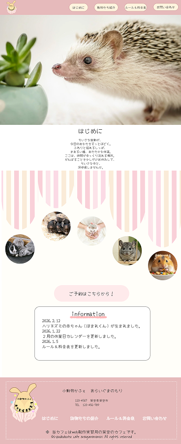
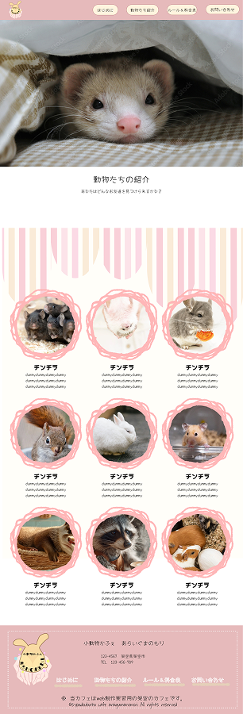
Web Site
都内で展開する小動物カフェ「あらいぐまのもり」を想定した架空のWebサイトを制作しました。気軽に癒しを求める女性をターゲットに「やさしくてかわいい世界観」をコンセプトとしています。デザインはパステルピンクを基調に、ストライプや丸みのある装飾を取り入れることで、ふんわりとした可愛らしさを表現しました。また、動物の写真を多く配置し、視覚的にも楽しめる構成にしています。全体の統一感を出すために色味や余白のバランスを細かく調整した点が工夫したポイントです。一方で、タイトル部分などの文字の視認性には改善の余地があると感じており、今後の課題としています。
➽小動物かふぇ あらいくまのもり
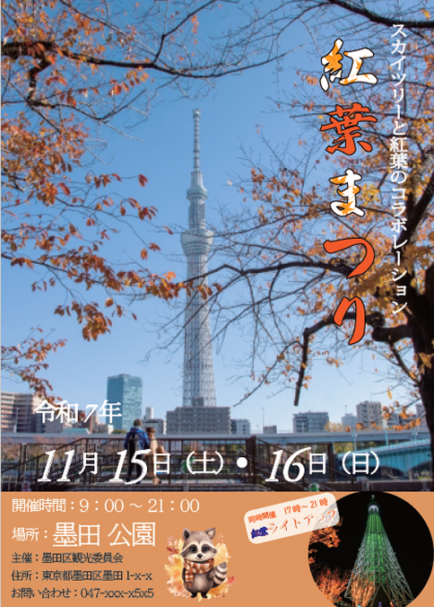
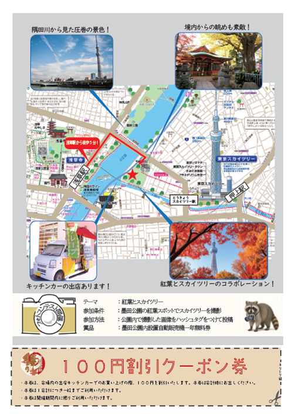
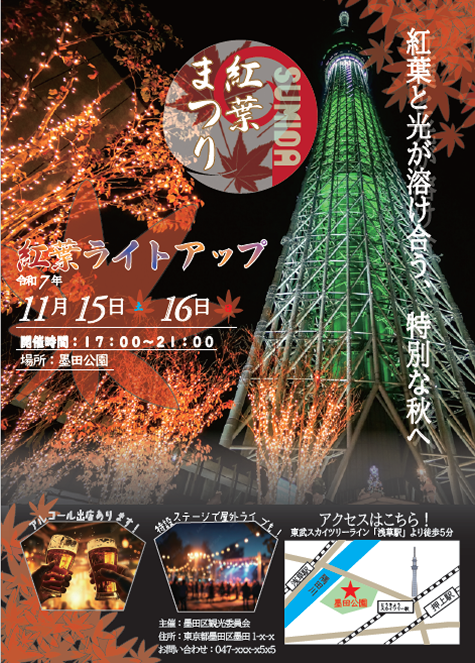
Poster / Print
紅葉まつりのチラシを想定して制作しました。秋の季節感を楽しみたい幅広い年齢層をターゲットに、イベントの魅力が伝わるデザインをコンセプトとしています。メインビジュアルには紅葉と風景写真を大きく使用し、秋らしさと臨場感を表現しました。また、開催日時やアクセス情報などの必要な情報は視認性を意識して整理し、初めて訪れる人にも分かりやすいレイアウトにしています。さらに、地図やクーポンを掲載することで、来場者の行動を促す工夫も取り入れています。一方で、情報量が多いため、余白の使い方や視線誘導については今後の改善点として考えています。
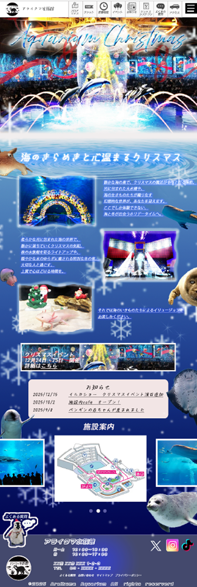
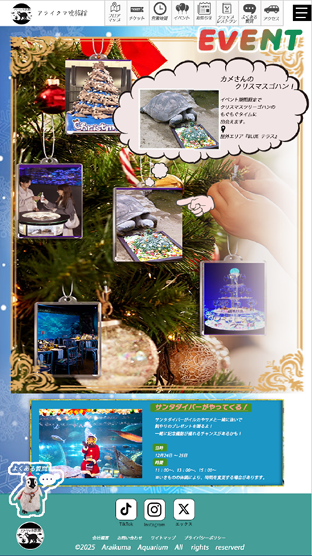
Web Site
水族館のクリスマスイベントを想定したWebサイトデザインを制作しました。家族連れやカップルをターゲットに、「幻想的で特別感のあるクリスマス体験」をコンセプトとしています。メインビジュアルには光や演出のある写真を使用し、非日常的な雰囲気を演出しています。また、イベント情報や見どころはセクションごとに整理し、視線の流れを意識したレイアウトにすることで、情報が直感的に伝わるよう工夫しました。幻想的な世界観と情報の分かりやすさの両立を意識した点が工夫したポイントです。一方で、装飾要素が多いため、余白や情報の強弱の付け方については今後の改善点として考えています。
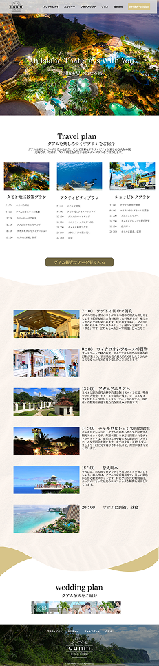
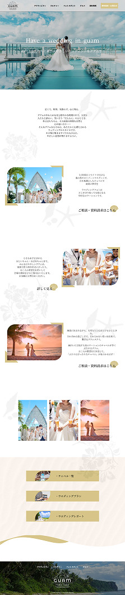
Web Site
グアム旅行の紹介サイトを想定したWebデザインを制作しました。日常から離れてリラックスしたい大人の男女をターゲットに、「落ち着きと癒しを感じられる空間」をコンセプトとしています。全体のデザインはベージュや淡いトーンを基調にまとめ、やわらかく上品な印象を演出しました。写真とテキストのバランスを調整することで、閲覧者が快適に情報を得られる構成にしています。制作にはデザインツールを使用し、配色や余白、視線誘導を意識して設計しました。落ち着いた世界観と情報の見やすさを両立した点が工夫したポイントです。一方で、全体的にシンプルなデザインであるため、アクセントの付け方については今後の改善点として考えています。
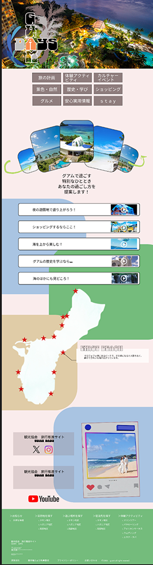
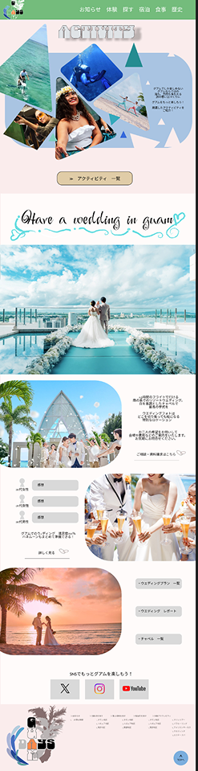
Web Site
グアム旅行をテーマにしたWebサイト（Ver.2）を制作しました。海外旅行を検討している若年層やカップルをターゲットに、「開放感とリゾート気分を感じられるデザイン」をコンセプトとしています。全体のデザインは青やエメラルドグリーンを基調とし、海や空をイメージした爽やかで明るい印象に仕上げました。メインビジュアルにはビーチや観光地の写真を使用し、現地での体験を具体的にイメージできるよう工夫しています。、配色や情報設計、全体のバランスを意識して構成しました。リゾート感のある世界観と情報の見やすさを両立した点が工夫したポイントです。一方で、情報量が多いため、余白の使い方や情報の優先順位については今後の改善点として考えています。
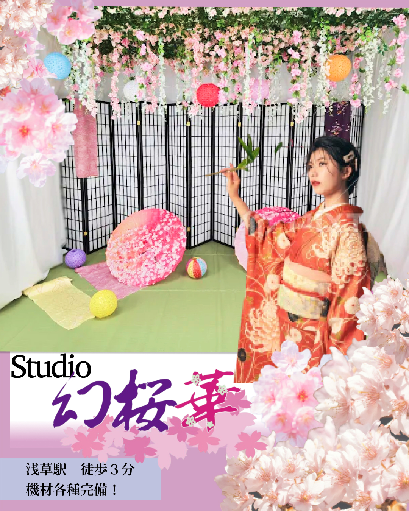
SNS / Instagram
浅草にある和風フォトスタジオ「幻桜華」のスタジオの広告用で、Instagramに掲載するデザインを制作しました。浅草の観光の思い出に和や花を基調としたスタジオで着物姿をしっかりと残したい人をターゲットとしています。メインは桜と和装の人で、よりイメージを膨らませてもらえるよう、実際のスタジオに人がいるような構成にしています。配色は桜を引き立たせるよう白とバランスのいい薄い紫を使用しました。
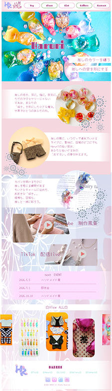
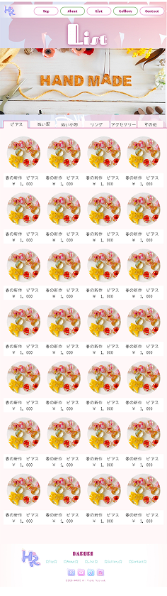
Web Site / Handmade
ハンドメイドサイト HARURI
ハンドメイド作品を紹介する個人サイトとして制作しました。制作にあたっては、「推し活をするわくわく感や自分の好きを見つけられるサイト」を重視しています。
デザイン面では、ハンドメイド特有の温かみややさしい印象を表現するため、パステルカラー、花を基調に配色を設計しました。また、余白を十分に確保し、視線の流れを意識したレイアウトにすることで、情報の可読性と視認性を高めています。
トップページではファーストビューにビジュアル要素を配置し、サイト全体の世界観と作品の魅力を直感的に伝える構成としました。詳細ページでは素材や制作背景などの情報を整理し、ユーザーが安心して作品を理解できるよう情報設計を行っています。
さらに、一覧ページではカード型レイアウトを採用し、複数の作品を比較・検討しやすいUIを実現しました。スマートフォンでの閲覧を前提とし、縦スクロールを軸とした操作性の高い設計にしています。
➽ハンドメイドサイト HARURI
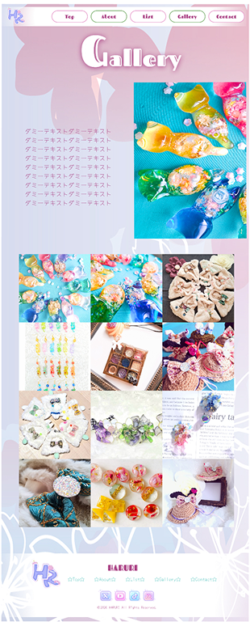
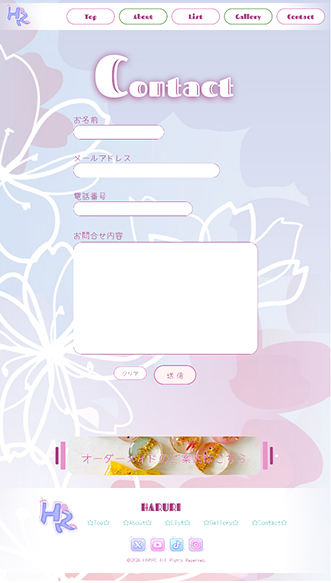
Web Site / Handmade
こちらは上記のハンドメイド作品紹介サイトの下層ページ（ギャラリー・コンタクト）として制作しました。ユーザーの行動導線を意識し、「作品閲覧から問い合わせまでをスムーズにつなぐ設計」を目的としています。 ギャラリーページでは、複数の作品を一覧で比較しやすいようグリッドレイアウトを採用しました。視線の流れに沿って自然にスクロールできる構成とし、作品画像が主役となるよう装飾は抑えつつ、サイト全体のトーンとの統一感を維持しています。 コンタクトページでは、入力フォームの視認性と操作性を重視しました。背景にはブランドイメージを反映した柔らかなビジュアルを使用しつつ、フォーム要素はコントラストを確保することで、ユーザーが迷わず入力できる設計としています。また、入力項目の整理や余白設計により、ストレスのないユーザー体験を目指しました。 いずれのページもスマートフォンでの閲覧を前提に設計し、縦スクロール中心のシンプルな操作性と、情報の優先順位を意識したレイアウトを実現しています。サイト全体を通して、世界観の一貫性とユーザビリティの両立を重視しました。